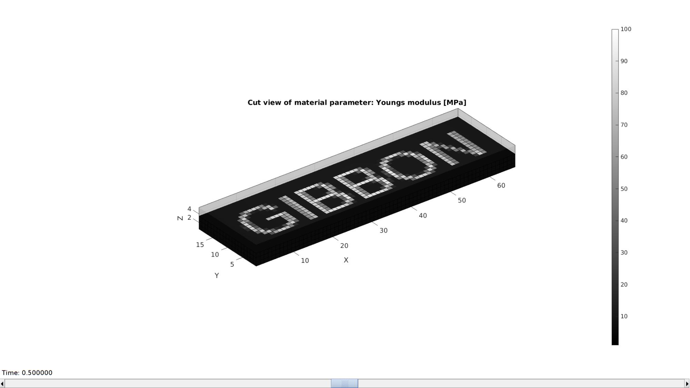
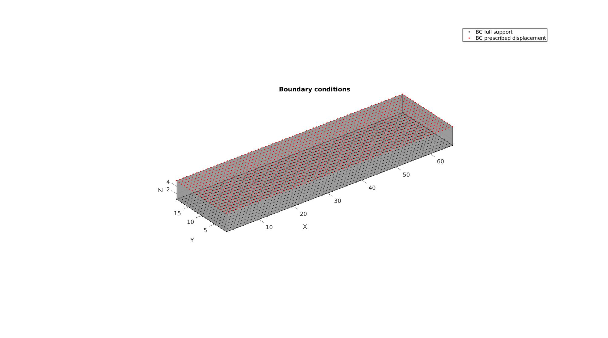

DEMO_febio_0027_layer_spatially_varying_material
Below is a demonstration for:
- Building geometry for a cube with hexahedral elements
- Defining the boundary conditions
- Coding the febio structure
- Running the model
- Importing and visualizing the displacement and stress results
Contents
Keywords
- febio_spec version 4.0
- febio, FEBio
- uniaxial loading
- compression, tension, compressive, tensile
- displacement control, displacement boundary condition
- hexahedral elements, hex8
- cube, box, rectangular
- static, solid
- hyperelastic, Ogden
- displacement logfile
- SED logfile
clear; close all; clc;
Plot settings
Plot settings
fontSize=15; faceAlpha1=0.8; faceAlpha2=1; edgeColor=0.25*ones(1,3); edgeWidth=1.5; markerSize1=10; cMap=gjet(4);
Control parameters
% Path names defaultFolder = fileparts(fileparts(mfilename('fullpath'))); savePath=fullfile(defaultFolder,'data','temp'); % Defining file names febioFebFileNamePart='tempModel'; febioFebFileName=fullfile(savePath,[febioFebFileNamePart,'.feb']); %FEB file name febioLogFileName=[febioFebFileNamePart,'.txt']; %FEBio log file name febioLogFileName_disp=[febioFebFileNamePart,'_disp_out.txt']; %Log file name for exporting displacement febioLogFileName_sed=[febioFebFileNamePart,'_sed_out.txt']; %Log file name for exporting strain energy density %Geometry parameters fontSizeImage=15; imagePadAmount=4; numElemLayers=5; displacementMagnitude=-0.2.*numElemLayers; % FEA control settings numTimeSteps=5; %Number of time steps desired max_refs=25; %Max reforms max_ups=0; %Set to zero to use full-Newton iterations opt_iter=6; %Optimum number of iterations max_retries=5; %Maximum number of retires dtmin=(1/numTimeSteps)/100; %Minimum time step size dtmax=1/numTimeSteps; %Maximum time step size E_youngs_min=1; %Lowest Youngs modulus E_youngs_max=100; %Highest Youngs modulus nu=0.4; %Poissons ratio
DEFINING AND VISUALIZING THE PARAMETER MAP
%Create text image G=flipud(textImage('GIBBON','Arial',fontSizeImage,imagePadAmount)); %Thicken image S=repmat(G,[1 1 numElemLayers]); %Normalize data S=S-min(S(:)); %Subtract minimum -> range [0-...] S=S./max(S(:)); %Devide by max -> range [0-1] %Use scaling data S to generate element Youngs moduli E_youngs_elem=S(:).*(E_youngs_max-E_youngs_min)+E_youngs_min;
BUILD MODEL
%Create hexahedral elements with function based colors [E,V,C]=ind2patch(true(size(S)),S,'hu'); F=element2patch(E); [F]=element2patch(E); %Get boundary faces for light plotting [indBoundary]=tesBoundary(F); Fb=F(indBoundary,:);
Plotting model boundary surfaces and a cut view
%Create mesh struct for plotting meshStruct.elements=E; meshStruct.elementData=E_youngs_elem; meshStruct.nodes=V; meshStruct.faces=F; hFig=cFigure; hold on; title('Cut view of material parameter: Youngs modulus [MPa]','FontSize',fontSize); optionStruct.hFig=hFig; optionStruct.cutDir=3; optionStruct.cutSide=-1; meshView(meshStruct,optionStruct); colormap(gca,gray(250)); caxis([E_youngs_min E_youngs_max]); axisGeom(gca,fontSize); drawnow;
SET UP BOUNDARY CONDITIONS
%List of nodes for applying displacement logicTopNodes=abs(V(:,3)-max(V(:,3)))<=max(eps(V(:,3))); bcPrescribeList=find(logicTopNodes); %List of nodes to fix logicBottomNodes=abs(V(:,3)-min(V(:,3)))<=max(eps(V(:,3))); bcSupportList=find(logicBottomNodes);
Visualize BC's
cFigure; hold on; title('Boundary conditions','FontSize',fontSize); gpatch(Fb,V,'kw','none',0.4); hl(1)=plotV(V(bcSupportList,:),'k.','MarkerSize',markerSize1); hl(2)=plotV(V(bcPrescribeList,:),'r.','MarkerSize',markerSize1); legend(hl,{'BC full support','BC prescribed displacement'}) axisGeom; camlight headlight; set(gca,'FontSize',fontSize); drawnow;
Defining the FEBio input structure
See also febioStructTemplate and febioStruct2xml and the FEBio user manual.
%Get a template with default settings [febio_spec]=febioStructTemplate; %febio_spec version febio_spec.ATTR.version='4.0'; %Module section febio_spec.Module.ATTR.type='solid'; %Control section febio_spec.Control.analysis='STATIC'; febio_spec.Control.time_steps=numTimeSteps; febio_spec.Control.step_size=1/numTimeSteps; febio_spec.Control.solver.max_refs=max_refs; febio_spec.Control.solver.qn_method.max_ups=max_ups; febio_spec.Control.time_stepper.dtmin=dtmin; febio_spec.Control.time_stepper.dtmax=dtmax; febio_spec.Control.time_stepper.max_retries=max_retries; febio_spec.Control.time_stepper.opt_iter=opt_iter; %Material section materialName1='Material1'; dataMapName1='MaterialParameterMap1'; febio_spec.Material.material{1}.ATTR.name=materialName1; febio_spec.Material.material{1}.ATTR.type='neo-Hookean'; febio_spec.Material.material{1}.ATTR.id=1; febio_spec.Material.material{1}.E.ATTR.type='map'; %Calls for mapping of parameter febio_spec.Material.material{1}.E=dataMapName1; %Calls for mapping of parameter febio_spec.Material.material{1}.v=nu; % Mesh section % -> Nodes febio_spec.Mesh.Nodes{1}.ATTR.name='Object1'; %The node set name febio_spec.Mesh.Nodes{1}.node.ATTR.id=(1:size(V,1))'; %The node id's febio_spec.Mesh.Nodes{1}.node.VAL=V; %The nodel coordinates % -> Elements partName1='Part1'; febio_spec.Mesh.Elements{1}.ATTR.name=partName1; %Name of this part febio_spec.Mesh.Elements{1}.ATTR.type='hex8'; %Element type febio_spec.Mesh.Elements{1}.elem.ATTR.id=(1:1:size(E,1))'; %Element id's febio_spec.Mesh.Elements{1}.elem.VAL=E; %The element matrix % -> NodeSets nodeSetName1='bcSupportList'; febio_spec.Mesh.NodeSet{1}.ATTR.name=nodeSetName1; febio_spec.Mesh.NodeSet{1}.VAL=mrow(bcSupportList); nodeSetName2='bcPrescribeList'; febio_spec.Mesh.NodeSet{2}.ATTR.name=nodeSetName2; febio_spec.Mesh.NodeSet{2}.VAL=mrow(bcPrescribeList); %MeshData secion %-> Element data febio_spec.MeshData.ElementData.ATTR.name=dataMapName1; febio_spec.MeshData.ElementData.ATTR.elem_set=partName1; febio_spec.MeshData.ElementData.elem.ATTR.lid=(1:1:size(E,1))'; febio_spec.MeshData.ElementData.elem.VAL=E_youngs_elem; %MeshDomains section febio_spec.MeshDomains.SolidDomain.ATTR.name=partName1; febio_spec.MeshDomains.SolidDomain.ATTR.mat=materialName1; %Boundary condition section % -> Fix boundary conditions febio_spec.Boundary.bc{1}.ATTR.name='zero_displacement_xyz'; febio_spec.Boundary.bc{1}.ATTR.type='zero displacement'; febio_spec.Boundary.bc{1}.ATTR.node_set=nodeSetName1; febio_spec.Boundary.bc{1}.x_dof=1; febio_spec.Boundary.bc{1}.y_dof=1; febio_spec.Boundary.bc{1}.z_dof=1; febio_spec.Boundary.bc{2}.ATTR.name='zero_displacement_xy'; febio_spec.Boundary.bc{2}.ATTR.type='zero displacement'; febio_spec.Boundary.bc{2}.ATTR.node_set=nodeSetName2; febio_spec.Boundary.bc{2}.x_dof=1; febio_spec.Boundary.bc{2}.y_dof=1; febio_spec.Boundary.bc{2}.z_dof=0; febio_spec.Boundary.bc{3}.ATTR.name='prescibed_displacement_z'; febio_spec.Boundary.bc{3}.ATTR.type='prescribed displacement'; febio_spec.Boundary.bc{3}.ATTR.node_set=nodeSetName2; febio_spec.Boundary.bc{3}.dof='z'; febio_spec.Boundary.bc{3}.value.ATTR.lc=1; febio_spec.Boundary.bc{3}.value.VAL=displacementMagnitude; febio_spec.Boundary.bc{3}.relative=0; %LoadData section % -> load_controller febio_spec.LoadData.load_controller{1}.ATTR.name='LC_1'; febio_spec.LoadData.load_controller{1}.ATTR.id=1; febio_spec.LoadData.load_controller{1}.ATTR.type='loadcurve'; febio_spec.LoadData.load_controller{1}.interpolate='LINEAR'; %febio_spec.LoadData.load_controller{1}.extend='CONSTANT'; febio_spec.LoadData.load_controller{1}.points.pt.VAL=[0 0; 1 1]; %Output section % -> log file febio_spec.Output.logfile.ATTR.file=febioLogFileName; febio_spec.Output.logfile.node_data{1}.ATTR.file=febioLogFileName_disp; febio_spec.Output.logfile.node_data{1}.ATTR.data='ux;uy;uz'; febio_spec.Output.logfile.node_data{1}.ATTR.delim=','; febio_spec.Output.logfile.element_data{1}.ATTR.file=febioLogFileName_sed; febio_spec.Output.logfile.element_data{1}.ATTR.data='sed'; febio_spec.Output.logfile.element_data{1}.ATTR.delim=','; % Plotfile section febio_spec.Output.plotfile.compression=0;
Quick viewing of the FEBio input file structure
The febView function can be used to view the xml structure in a MATLAB figure window.
febView(febio_spec); %Viewing the febio file
Exporting the FEBio input file
Exporting the febio_spec structure to an FEBio input file is done using the febioStruct2xml function.
febioStruct2xml(febio_spec,febioFebFileName); %Exporting to file and domNode
Running the FEBio analysis
To run the analysis defined by the created FEBio input file the runMonitorFEBio function is used. The input for this function is a structure defining job settings e.g. the FEBio input file name. The optional output runFlag informs the user if the analysis was run succesfully.
febioAnalysis.run_filename=febioFebFileName; %The input file name febioAnalysis.run_logname=febioLogFileName; %The name for the log file febioAnalysis.disp_on=1; %Display information on the command window febioAnalysis.runMode='external';%'internal'; [runFlag]=runMonitorFEBio(febioAnalysis);%START FEBio NOW!!!!!!!!
%%%%%%%%%%%%%%%%%%%%%%%%%%%%%%%%%%%%%%%%%%%%%%%%%%%%%%%%%%%%%%%%%%%%%%%%%%%
--------> RUNNING/MONITORING FEBIO JOB <-------- 20-Apr-2023 10:46:20
FEBio path: /home/kevin/FEBioStudio2/bin/febio4
# Attempt removal of existing log files 20-Apr-2023 10:46:20
* Removal succesful 20-Apr-2023 10:46:20
# Attempt removal of existing .xplt files 20-Apr-2023 10:46:20
* Removal succesful 20-Apr-2023 10:46:20
# Starting FEBio... 20-Apr-2023 10:46:20
Max. total analysis time is: Inf s
* Waiting for log file creation 20-Apr-2023 10:46:20
Max. wait time: 30 s
* Log file found. 20-Apr-2023 10:46:20
# Parsing log file... 20-Apr-2023 10:46:20
number of iterations : 3 20-Apr-2023 10:46:21
number of reformations : 3 20-Apr-2023 10:46:21
------- converged at time : 0.2 20-Apr-2023 10:46:21
number of iterations : 3 20-Apr-2023 10:46:22
number of reformations : 3 20-Apr-2023 10:46:22
------- converged at time : 0.4 20-Apr-2023 10:46:22
number of iterations : 3 20-Apr-2023 10:46:22
number of reformations : 3 20-Apr-2023 10:46:22
------- converged at time : 0.6 20-Apr-2023 10:46:22
number of iterations : 3 20-Apr-2023 10:46:23
number of reformations : 3 20-Apr-2023 10:46:23
------- converged at time : 0.8 20-Apr-2023 10:46:23
number of iterations : 3 20-Apr-2023 10:46:24
number of reformations : 3 20-Apr-2023 10:46:24
------- converged at time : 1 20-Apr-2023 10:46:24
Elapsed time : 0:00:04 20-Apr-2023 10:46:24
N O R M A L T E R M I N A T I O N
# Done 20-Apr-2023 10:46:24
%%%%%%%%%%%%%%%%%%%%%%%%%%%%%%%%%%%%%%%%%%%%%%%%%%%%%%%%%%%%%%%%%%%%%%%%%%%
Import FEBio results
if runFlag==1 %i.e. a succesful run
Importing nodal displacements from a log file
dataStruct=importFEBio_logfile(fullfile(savePath,febioLogFileName_disp),0,1);
%Access data
N_disp_mat=dataStruct.data; %Displacement
timeVec=dataStruct.time; %Time
%Create deformed coordinate set
V_DEF=N_disp_mat+repmat(V,[1 1 size(N_disp_mat,3)]);
Importing element stress from a log file
dataStruct=importFEBio_logfile(fullfile(savePath,febioLogFileName_sed),0,1);
%Access data
E_energy=dataStruct.data;
Plotting the simulated results using anim8 to visualize and animate deformations
[CV]=faceToVertexMeasure(E,V,E_energy(:,:,end));
% Create basic view and store graphics handle to initiate animation
hf=cFigure; %Open figure
gtitle([febioFebFileNamePart,': Press play to animate']);
title('$\sigma_{zz}$ [MPa]','Interpreter','Latex')
hp=gpatch(Fb,V_DEF(:,:,end),CV,'k',1); %Add graphics object to animate
hp.FaceColor='interp';
axisGeom(gca,fontSize);
colormap(gjet(250)); colorbar;
caxis([min(E_energy(:)) max(E_energy(:))]/8);
axis(axisLim(V_DEF)); %Set axis limits statically
camlight headlight;
% Set up animation features
animStruct.Time=timeVec; %The time vector
for qt=1:1:size(N_disp_mat,3) %Loop over time increments
[CV]=faceToVertexMeasure(E,V,E_energy(:,:,qt));
%Set entries in animation structure
animStruct.Handles{qt}=[hp hp]; %Handles of objects to animate
animStruct.Props{qt}={'Vertices','CData'}; %Properties of objects to animate
animStruct.Set{qt}={V_DEF(:,:,qt),CV}; %Property values for to set in order to animate
end
anim8(hf,animStruct); %Initiate animation feature
drawnow;

end

GIBBON www.gibboncode.org
Kevin Mattheus Moerman, gibbon.toolbox@gmail.com
GIBBON footer text
License: https://github.com/gibbonCode/GIBBON/blob/master/LICENSE
GIBBON: The Geometry and Image-based Bioengineering add-On. A toolbox for image segmentation, image-based modeling, meshing, and finite element analysis.
Copyright (C) 2006-2022 Kevin Mattheus Moerman and the GIBBON contributors
This program is free software: you can redistribute it and/or modify it under the terms of the GNU General Public License as published by the Free Software Foundation, either version 3 of the License, or (at your option) any later version.
This program is distributed in the hope that it will be useful, but WITHOUT ANY WARRANTY; without even the implied warranty of MERCHANTABILITY or FITNESS FOR A PARTICULAR PURPOSE. See the GNU General Public License for more details.
You should have received a copy of the GNU General Public License along with this program. If not, see http://www.gnu.org/licenses/.